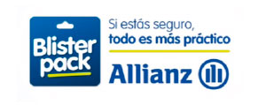

Blister Pack

Juana Manso 1750, 2º piso oficina 2, Norte
1107 - Ciudad Autónoma de Buenos Aires - Capital Federal - Argentina
Teléfono: 0810-333-BLISTER
Web Site: www.blisterpack.com.ar
1107 - Ciudad Autónoma de Buenos Aires - Capital Federal - Argentina
Teléfono: 0810-333-BLISTER
Web Site: www.blisterpack.com.ar
Perfil
BlisterPack - Hacé el negocio más práctico de tu vida Somos la empresa que se llevó el premio Revelación Retail 100 en el año 2013, por nuestra innovadora manera de vender seguros y servicios de forma rápida, confiable, y con el respaldo de Allianz, la empresa aseguradora número uno del mundo. Trabajamos con más de 1.000 puntos de venta en todo el país, que vieron en nuestros Packs la posibilidad de agregarle valor a sus artículos elevando considerablemente el ticket promedio y maximizando las ganancias. BlisterPack es la solución más práctica para incrementar tus ventas, mejorar la relación con tus clientes y diferenciarte de tu competencia. Nuestros productos Día a día seguimos innovando para incrementar nuestra variedad de productos, y de esta manera ayudar a que los vendedores tengan siempre una nueva opción para ofrecer. Con BlisterPack se pueden proteger desde productos personales hasta todos los artículos del hogar en cuestión de segundos: Pack Seguro Fallos Pack Seguro Hogar Pack Seguro Bolso Pack Seguro Portátiles Pack Protección Extendida Funcionamiento Es muy simple. El cliente compra el Pack más indicado para asegurar sus productos, lo activa desde nuestra web o con su vendedor de confianza, y disfruta la tranquilidad de disponer de un seguro más real, más fácil de pagar, y más práctico que cualquier otro. 01-Lo comprás, 02-Lo activás 03-Lo disfrutás Si te animás a crecer, todo es más práctico. • 23 Provincias en todo el territorio Nacional. • Más de 100 Retails que confían en nosotros. Más de 450 Localidades que componen nuestra red de comercialización. Más de 750 Puntos de servicio técnico. Más de 1.000 Puntos de venta en todo el país. • Más de 6.000 Vendedores que ofrecen nuestros productos. Más de 10.000.000 de productos garantizados activos. Garantías Extendidas - Respaldo garantizado En BlisterPack también contamos con el apoyo de Garantías Extendidas, compañía pionera en este tipo de servicios que ofrece una de las más grandes redes de capacidades de extensión de garantía, suministrando servicios a través de sus acuerdos con el mercado asegurador. A partir del año 2000, GarantiasExtendidas.com desarrolló un sistema de atención específico para las casas de artículos del hogar, con el objetivo principal de cuidar el vínculo consumidor - comercio, dando siempre una rápida respuesta, atención personalizada y puntualidad en las reparaciones. Como producto destacado, dispone de su Promo Max que brinda cobertura por Robo, Incendio y Rayo a los artículos desde el momento de la compra por los primeros 12 meses. Adicionalmente, otorga cobertura por Daños Accidentales durante los primeros 4 meses desde la fecha de factura de compra. Los Daños Accidentales cubren aquellos daños materiales directos sufridos por causa acci- dental, súbita e imprevista, mientras se encuentren en el lugar indicado en la póliza. Si los productos se pueden reparar van al servicio técnico y en caso contrario se reponen por uno nuevo igual o de símiles características. Centro propio de atención al cliente y telefónica. Equipo especializado y con experiencia comprobable en el rubro. Red de servicio en todo el país. Velocidad de respuesta, confiabilidad, tranquilidad y comodidad.
Novedades a presentar
En Retail 100 preparate para la presentación exclusiva de 2 nuevos Packs: Pack Seguro Moto Pack Seguro Accidentes Personales
BlisterPack - Hacé el negocio más práctico de tu vida Somos la empresa que se llevó el premio Revelación Retail 100 en el año 2013, por nuestra innovadora manera de vender seguros y servicios de forma rápida, confiable, y con el respaldo de Allianz, la empresa aseguradora número uno del mundo. Trabajamos con más de 1.000 puntos de venta en todo el país, que vieron en nuestros Packs la posibilidad de agregarle valor a sus artículos elevando considerablemente el ticket promedio y maximizando las ganancias. BlisterPack es la solución más práctica para incrementar tus ventas, mejorar la relación con tus clientes y diferenciarte de tu competencia. Nuestros productos Día a día seguimos innovando para incrementar nuestra variedad de productos, y de esta manera ayudar a que los vendedores tengan siempre una nueva opción para ofrecer. Con BlisterPack se pueden proteger desde productos personales hasta todos los artículos del hogar en cuestión de segundos: Pack Seguro Fallos Pack Seguro Hogar Pack Seguro Bolso Pack Seguro Portátiles Pack Protección Extendida Funcionamiento Es muy simple. El cliente compra el Pack más indicado para asegurar sus productos, lo activa desde nuestra web o con su vendedor de confianza, y disfruta la tranquilidad de disponer de un seguro más real, más fácil de pagar, y más práctico que cualquier otro. 01-Lo comprás, 02-Lo activás 03-Lo disfrutás Si te animás a crecer, todo es más práctico. • 23 Provincias en todo el territorio Nacional. • Más de 100 Retails que confían en nosotros. Más de 450 Localidades que componen nuestra red de comercialización. Más de 750 Puntos de servicio técnico. Más de 1.000 Puntos de venta en todo el país. • Más de 6.000 Vendedores que ofrecen nuestros productos. Más de 10.000.000 de productos garantizados activos. Garantías Extendidas - Respaldo garantizado En BlisterPack también contamos con el apoyo de Garantías Extendidas, compañía pionera en este tipo de servicios que ofrece una de las más grandes redes de capacidades de extensión de garantía, suministrando servicios a través de sus acuerdos con el mercado asegurador. A partir del año 2000, GarantiasExtendidas.com desarrolló un sistema de atención específico para las casas de artículos del hogar, con el objetivo principal de cuidar el vínculo consumidor - comercio, dando siempre una rápida respuesta, atención personalizada y puntualidad en las reparaciones. Como producto destacado, dispone de su Promo Max que brinda cobertura por Robo, Incendio y Rayo a los artículos desde el momento de la compra por los primeros 12 meses. Adicionalmente, otorga cobertura por Daños Accidentales durante los primeros 4 meses desde la fecha de factura de compra. Los Daños Accidentales cubren aquellos daños materiales directos sufridos por causa acci- dental, súbita e imprevista, mientras se encuentren en el lugar indicado en la póliza. Si los productos se pueden reparar van al servicio técnico y en caso contrario se reponen por uno nuevo igual o de símiles características. Centro propio de atención al cliente y telefónica. Equipo especializado y con experiencia comprobable en el rubro. Red de servicio en todo el país. Velocidad de respuesta, confiabilidad, tranquilidad y comodidad.
Novedades a presentar
En Retail 100 preparate para la presentación exclusiva de 2 nuevos Packs: Pack Seguro Moto Pack Seguro Accidentes Personales
Personal presente en Retail 100 Hogar